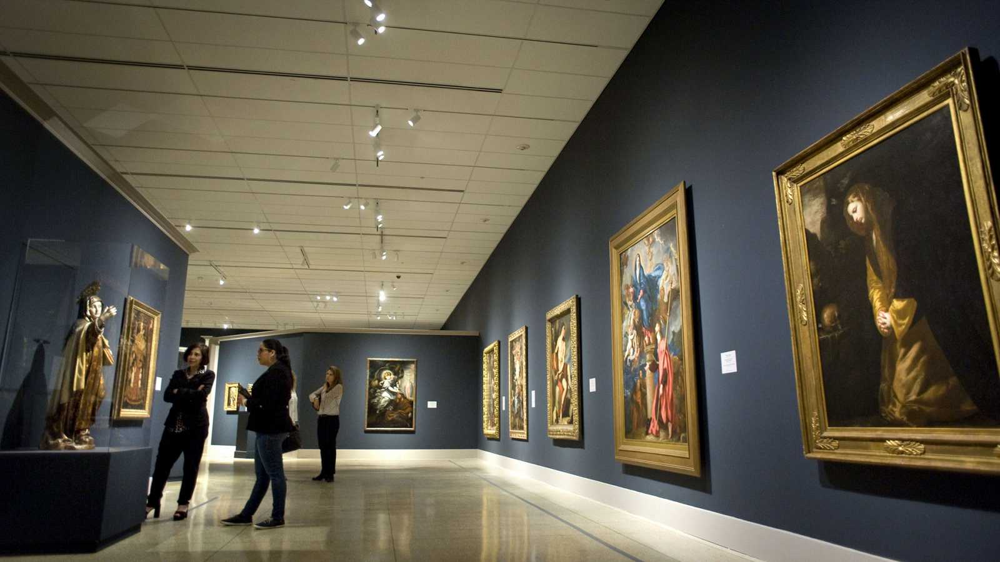

Importancia de los museos

Un museo (del latín, musēum y este, a su vez, del griego, Μουσείον) es una institución pública o privada, permanente, con o sin fines de lucro, al servicio de la sociedad y de su desarrollo, y abierta al público, que adquiere, conserva, investiga, comunica, expone o exhibe, con propósitos de estudio y educación, colecciones de arte, científicas, entre otros, siempre con un valor cultural, según el Consejo Internacional de Museos (ICOM).La ciencia que los estudia se denomina museología, la técnica de su gestión museografía y la administración de los mismos, museonomía. Los museos exponen colecciones, es decir, conjuntos de objetos e información que reflejan algún aspecto de la existencia humana o su entorno. Este tipo de colecciones, casi siempre valiosas, existen desde la Antigüedad: en los templos se guardaban objetos de culto u ofrendas que de vez en cuando se exhibían al público para que pudiera contemplarlos y admirarlos. Lo mismo ocurría con los objetos valiosos y obras de arte que coleccionaban algunas personas de la aristocracia en Grecia y en Roma; los tenían expuestos en sus casas, en sus jardines y los enseñaban con orgullo a los amigos y visitantes. Fue en el Renacimiento cuando se dio el nombre de "museo" tal y como hoy se entiende a los edificios expresamente dedicados la conservación y exposición de sus colecciones permanentes. Por otra parte están las galerías de arte, donde se muestran pinturas y esculturas, en exposiciones temporales, sin que necesariamente posean colecciones permanentes. Su nombre deriva de las galerías (de los palacios y castillos), que eran los espaciosos vestíbulos de forma alargada, con muchas ventanas o abiertos y sostenidos por columnas o pilares, destinados a los momentos de descanso y a la exhibición de objetos de adorno, muchas veces obras de arte.
Después de la Primera Guerra Mundial (1918) surgió la Oficina Internacional de Museos, que articuló los criterios museográficos cuyos programas y soluciones técnicas son vigentes hoy en día. En 1945 nació el Consejo Internacional de Museos (ICOM, por sus siglas en inglés) y en 1948 aparece la publicación periódica Museum mediante la cual se difunden hasta hoy en día las actividades de los museos en el mundo Un museo en la actualidad es un establecimiento complejo que requiere múltiples cuidados. Suele estar dotado de una amplia plantilla de trabajadores de las más diversas profesiones. Generalmente cuentan con un director y uno o varios conservadores, además de restauradores, personal de investigación, becarios, analistas, administradores, conserjes, personal de seguridad, entre otros. Los expertos afirman que el verdadero objetivo de los museos debe ser la divulgación de la cultura, la investigación, las publicaciones al respecto y las actividades educativas. En los últimos años ha surgido la idea de las exposiciones itinerantes en las que museos de distintas ciudades aportan algunas de sus obras para que puedan verse todas reunidas en un mismo lugar Actualmente existen una gran variedad de museos: museos de arte, museos históricos, museos de cera, museos de ciencias y técnica, museos de historia natural, museos dedicados a personalidades y museos arqueológicos, por nombrar solo algunos. En 1977 la ONU declaró el 18 de mayo como Día Internacional de los Museos.